再回广元
周末在广元度过了愉快的两天，现在身子回到成都了，但是心绪还停留在广元。上一次回学校，还是在 15 年 7 月，回去拿毕业证。这次借同学结婚的这个机会，再次重返。阔别 6 年，觉得广元、甚至学校变化都不大，还是那种熟悉的感觉。
为什么如此怀念这里呢？我总结了以下几点原因。
地方好
广元空气好，没有雾霾，时常都是蓝天白云。这么好的天气下，人的心情也容易好。另外广元有很多旅游的去处，当年入校时办了一张旅游卡，景点都是免费进。
当年经常和朋友一起，或者一个人，在南山湿地公园爬山、嘉陵江沿岸的步行道骑车和跑步，老城乱逛。一些困扰自己的问题，可以在锻炼同时突然得到解决，同时令自己的身心愉悦。
这里消费不高，个人觉得因为广元人均收入低，物价不贵。这是我在成都生活了几年，对比下的结果。从城西的火车站，打车到城东的学校，才 20 块。当然这也说明广元不大。
大学
高中压抑的三年让我太难受，我迫不及待地要逃离那里，没有一点留恋。到了川信我的感觉是：活得像个人。
在这里度过了 2 年多的时间，18 - 20 岁，正值青春年华。遇到很好的一群老师，和一群志同道合朋友，彼此共同学习、共同进步，为以后的事业打下基础。
坦率地说川信很“差”，收分线也不高，在这里愿意努力的人也不多。但正是这样宽松的环境下，稍微努力点就容易鹤立鸡群。比如我和其他朋友们都成功升了本科，并且能够靠着自己的的一技之长安身立命。
颇有远见的系主任创立了软件工作室，我们是第一届。同时享受到了很多学校提供的资源，还有过一次集体的旅游出行。在这里可以选择不用上课，让我们可以自己安排时间做项目和参加比赛。在工作室的几个月是无忧无虑的快乐学习时光。
运气
选择重要、努力重要、运气也重要。回头来看，我觉得自己的运气也挺好。
在高中末期，自己就为以后选定了软件开发这个专业。信息工程在川信是强项之一，在我的前面几个志愿学校都拒绝我之后，川信收了我。
新校区因为 08 年灾后重建，11 年投入使用，我正好在 12 年入学。如果自己是在老校区度过整个大学，我估计自己可能会半途退学。因为老校区的规模就和我们镇上初中一样。
升本的学校，15 年专升本能够进入成都大学，我们恰好是最后一届。
亲人
13 年 4 月，父母还有弟弟来过广元看我，开着家里送货的皮卡车。一个月后奶奶意外走了，一直很遗憾，该让他们把爷爷奶奶都一起带过来玩两天，也许会改变后来的结果。
以上应该就是自己为什么那么热爱广元的原因。不知道下一次去是多久，只希望下次去的时候我很有钱了。
最后附上一些在广元拍摄的照片。
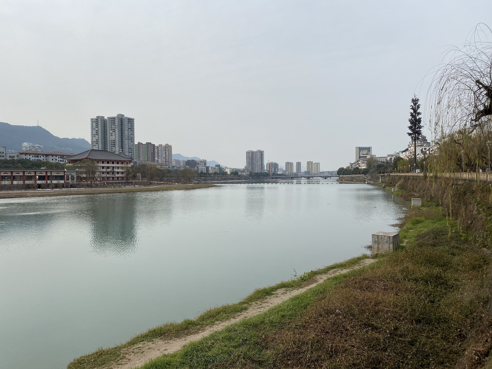
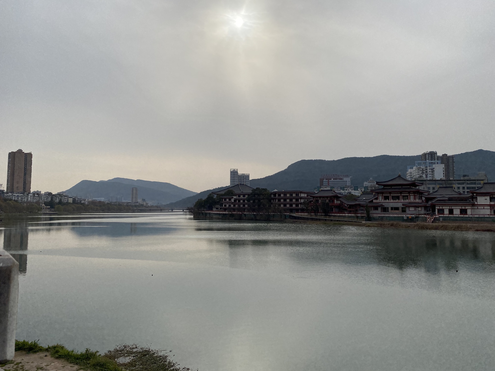
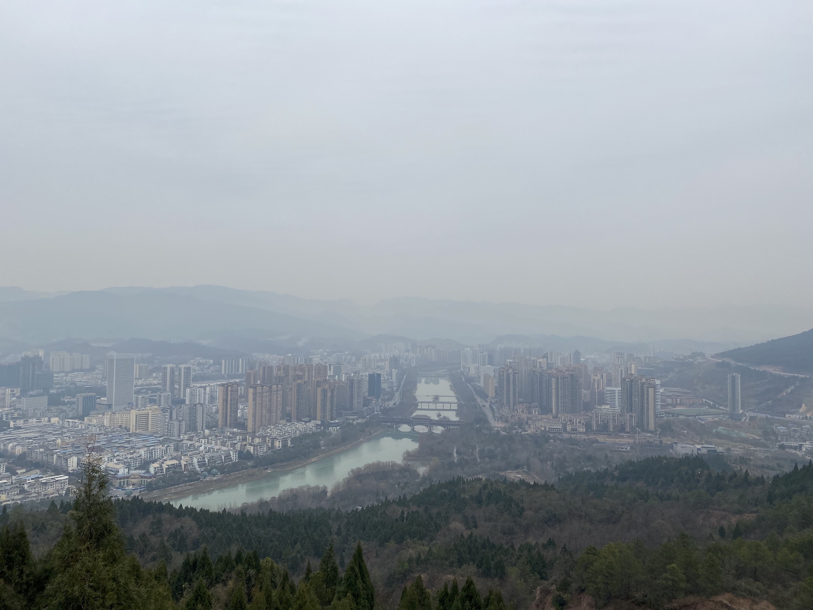
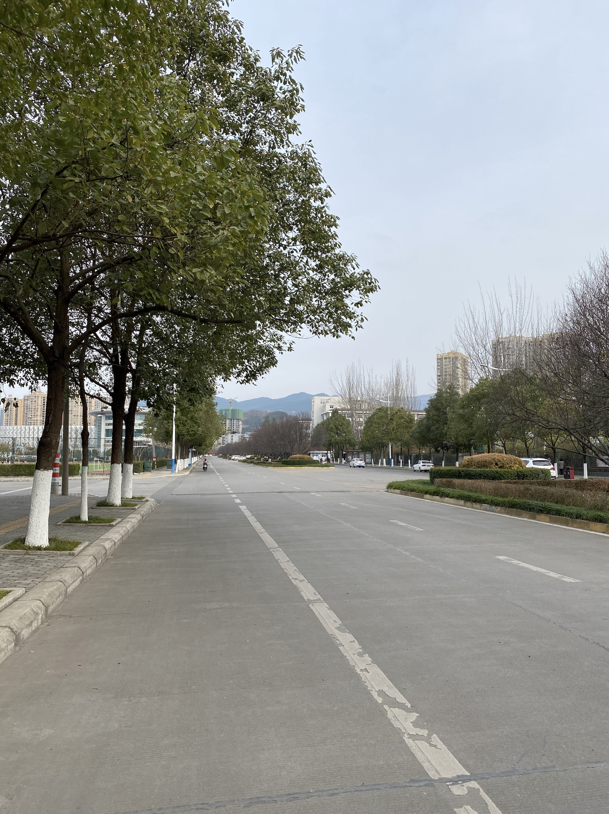
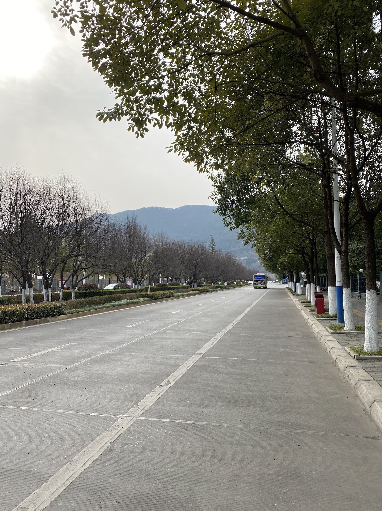
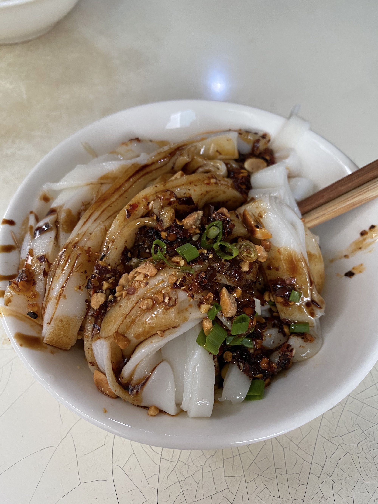
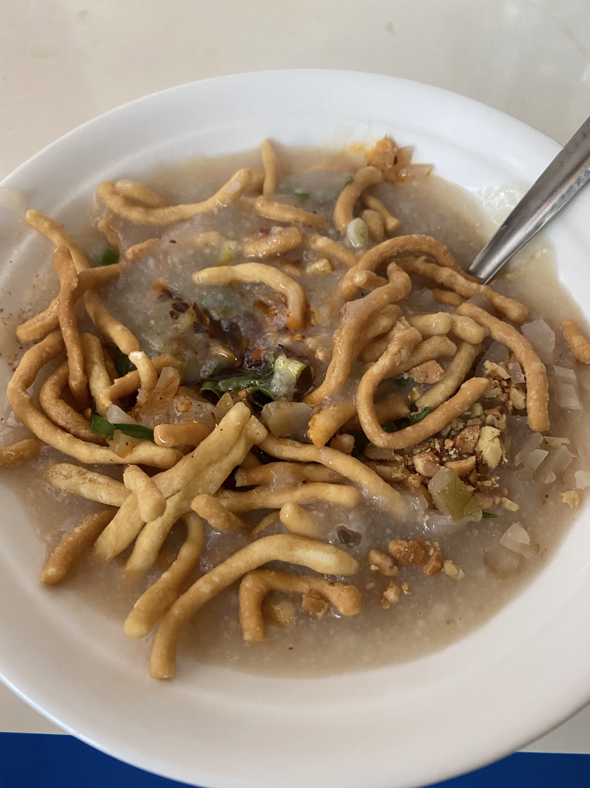
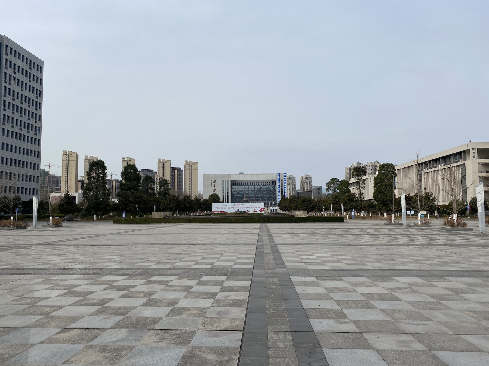
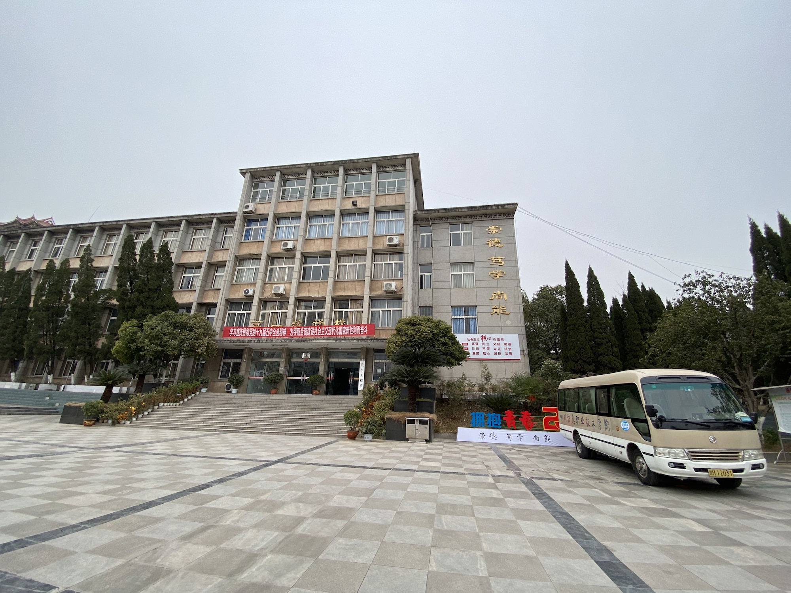
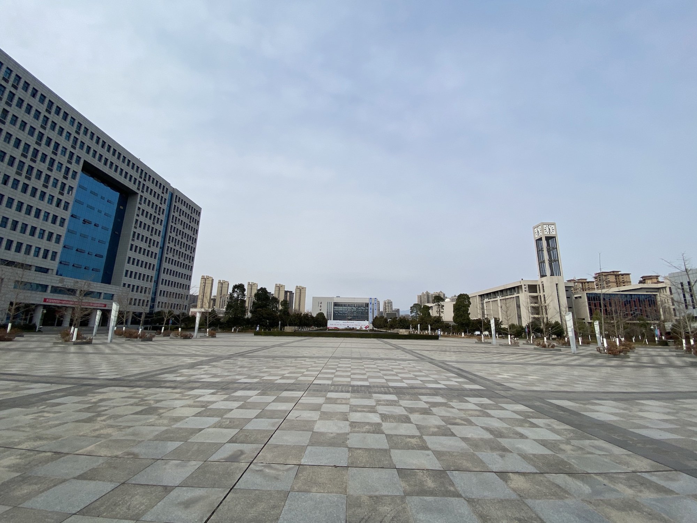
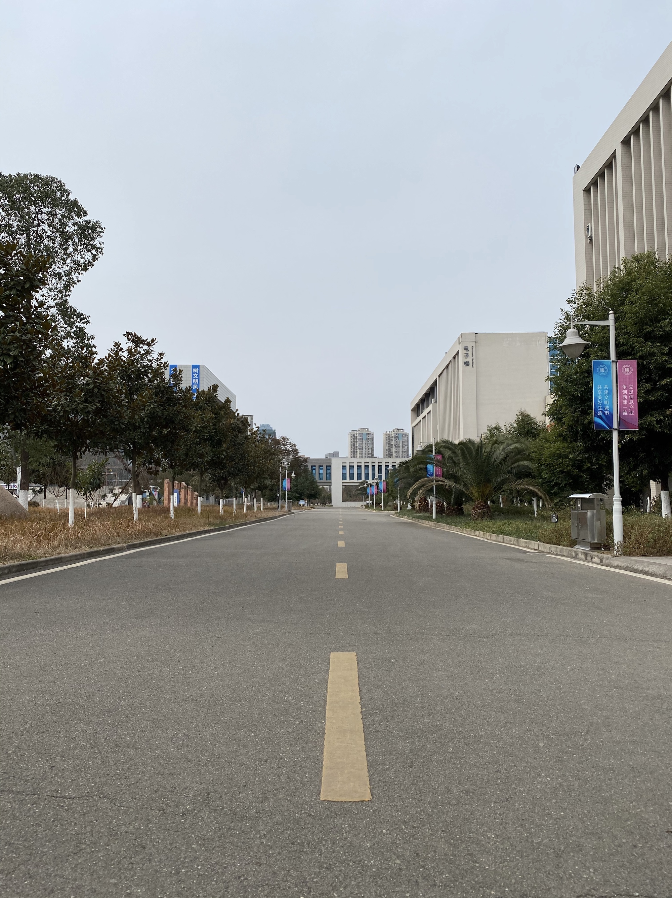